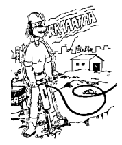
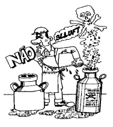
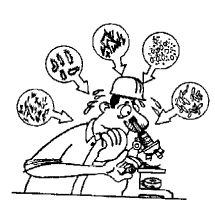

Riscos Ambientais são os agentes físicos, químicos e biológicos presentes nos ambientes de trabalho capazes de produzir danos à saúde quando superados os respectivos limites de tolerância. Esses limites são fixados em razão da natureza, concentração ou intensidade do agente e do tempo de exposição.
Os riscos ambientais decorrem das condições precárias inerentes ao ambiente ou ao próprio processo operacional das diversas atividades profissionais. São, portanto, condições inseguras de trabalho capazes de afetar a saúde, a segurança e o bem-estar do trabalhador.
Os riscos ambientais se classificam em: Agentes ]sicos: são as diversas formas de energia a que possam estar expostas os trabalhadores, tais como ruído, vibração, pressões anormais, temperaturas extremas, radiações ionizantes e não ionizantes, bem como o infrassom e o ultrassom.

Agentes Químicos : são as substancias, compostos ou produtos que possam penetrar no organismo pela via respiratória, nas formas de poeiras, fumos, nevoas, neblinas, gases ou vapores, ou que, pela natureza da aNvidade de exposição, possam ter contato ou ser absorvidos pelo organismo através da pele ou por ingestão.

Agentes Biológicos: são as bactérias, fungos, bacilos, parasitas, protozoários, vírus, entre outros.
